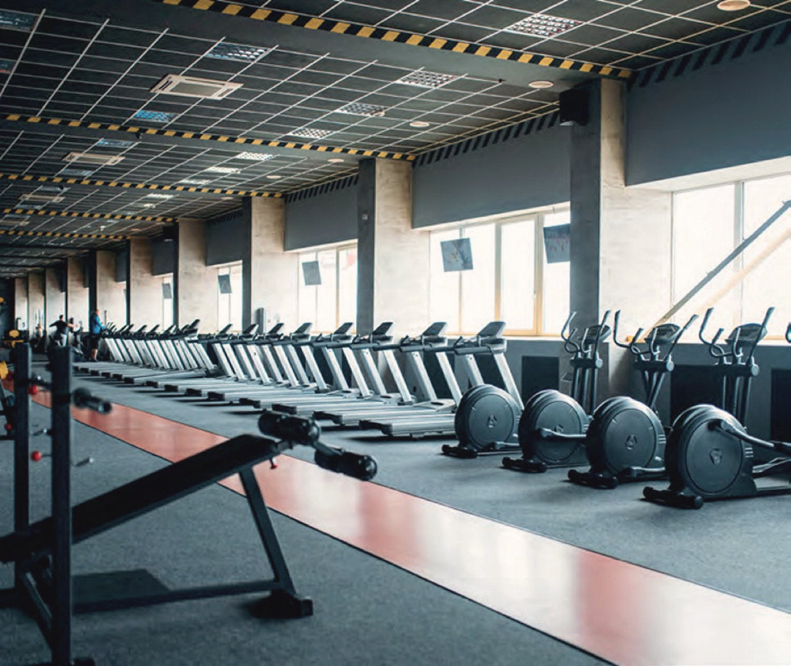
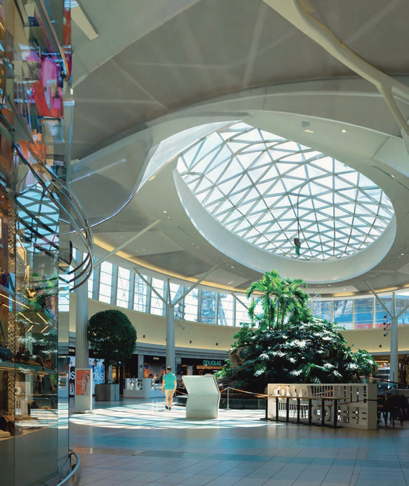

I
Villa Chloé
Un pavillon de plain-pied ouvert sur son jardin, de grandes baies vitrées jusqu'à huit mètres de hauteur, quatre suites.
473m² habitables
127m² de terrasses
4suites

Quarante et une villas d'exception, face aux montagnes de l'Atlas. Trois signatures : Chloé, Céline, Margaux.


Chaque villa est pensée comme une fusion harmonieuse entre architecture et environnement.
Des matériaux nobles, des finitions soignées, des lignes épurées et des jeux de lumière savamment orchestrés confèrent à chaque résidence une signature unique. Un domaine privé de huit hectares, à quelques minutes de Guéliz et de l'aéroport, où le luxe se fait quotidien : conciergerie, sécurité permanente, salle de sport, terrains de padel, café.
Un pavillon de plain-pied ouvert sur son jardin, de grandes baies vitrées jusqu'à huit mètres de hauteur, quatre suites.
Une façade sur la pelouse, des terrasses généreuses, cinq suites et un ascenseur privé.

La plus vaste des trois : six suites, 370 m² de terrasses couvertes, un ascenseur de verre, l'Atlas en panorama.
Même écriture architecturale, même niveau de prestations. Seule l'échelle change : du terrain à la suite, chaque villa est pensée pour une famille et ses invités.
Des séjours en double hauteur, des matières qui vieillissent avec grâce, des pièces ouvertes sur les terrasses. Conçus par Line Design.
Le catalogue des intérieurs


Huit hectares clos et gardés, une conciergerie, un café, une salle de sport, deux terrains de padel. Williams & Harper ne livre pas seulement une villa : le domaine est pensé pour que le quotidien soit simple.
Le café du domaine ouvre avec le jour : pain chaud, presse, le premier espresso face aux jardins. Une boutique de proximité y est adossée.

Réservée aux résidents, équipée en matériel récent, ouverte du matin au soir. Un coach sur demande, par la conciergerie.

Aux normes de compétition, éclairés le soir. Réservation depuis la conciergerie, raquettes à disposition.
Fruits, épicerie fine, fleurs, les indispensables du quotidien, à quelques pas de chez vous. Livraison à la villa sur simple appel.

Les parcours de Marrakech commencent à la sortie du domaine. Le golf le plus proche est à cinq minutes.

Le soleil tombe derrière les montagnes, la lumière orchestrée souligne la pierre et le bois. Tout le reste, la conciergerie s’en occupe.

Visites sur rendez-vous, avec un architecte du projet. Brochures et plans remis sur demande.